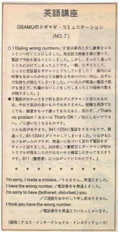

電話番号を間違えました。
Osamu wanted to make a reservation at a fancy restaurant. He dialed but it was the wrong number. He suddenly hung up when a woman answered the phone. He pretended that nothing happened in front of his wife because he didn’t want her to know that he made a mistake. We often make a mistake and dial wrong numbers. Even though a foreigner may not be fluent, they shouldn’t hang up, that is rude and maybe scary for the other person. They might think you are a crank caller. If you call and don’t recognize the voice you should still ask for that person- “Hello, may I speak to Jane?” or “I’m sorry, I have the wrong number.” The person who answers, may say the same thing to you- “I’m sorry, you have the wrong number.” Some people are very nice and tell you- “That’s no problem, or that’s ok.” To clarify that you made a mistake, you should check the number by saying “Is this 941-4789?” This will tell you if you made a mistake or if someone gave you the wrong number.
夕食は家内と少し豪華なレストランへ行くことにしました。英会話文例集を横において、電話で予約を取ることにしました。しかし、まったく違ったところにかけてしまったようです。一瞬、ヒヤリとして、とっさに受話器をガチャンと下ろしてしまいました！家内には何事もなかったかのような顔をよそおいつつ、内心、はずんだ気持ちが消えてしまいました。いい大人が間違い電話で詫びも言えず、礼儀のないことをしてしまったと、後味の悪さが残りました。
電話がかかってきて何も言わずにガチャンと切られるのは、やはり気分の良いものではありません。流暢な英語でなくても、誠意をもって謝ってもらえると、思わず、That’s no problem! 、あるいは、That’s OK! 「気にしないで下さい」と言いたくなるものです。 こんな話しがあります。９４１ー１２３４に電話をするつもりで、間違って、９１ー１２３４とダイヤルしてしまいました。つながるにはつながったのですが、間違いに気付いて思わず電話をガチャンと切りました。２０分程して警察官とガードマンが何かトラブルが発生したのではないかと確認しにやってきたそうです。９１１（警察署）につながっていたわけです。
すみません、間違えました。
I’m sorry, I made a mistake.
電話番号を間違えました。
I have the wrong number.
すみません。ご迷惑をおかけしました。
I’m sorry to have bothered (disturbed) you.
電話番号を間違えていらっしゃいます。
I think you have the wrong number.

| © 1995-2013 NACOS International Institute. All Rights Reserved. |